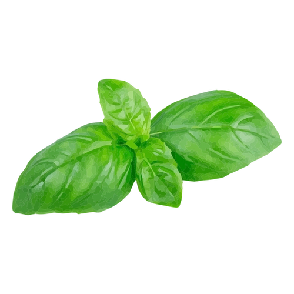
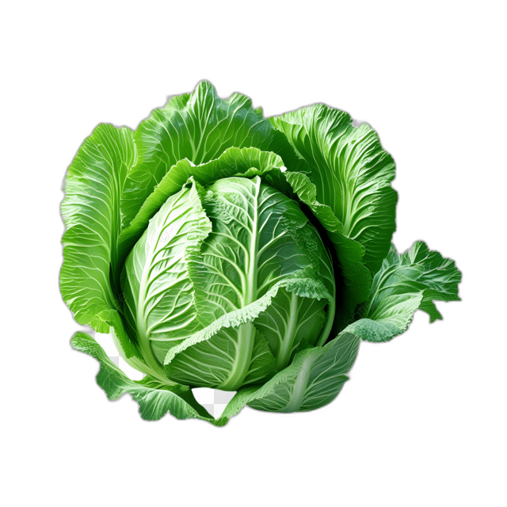
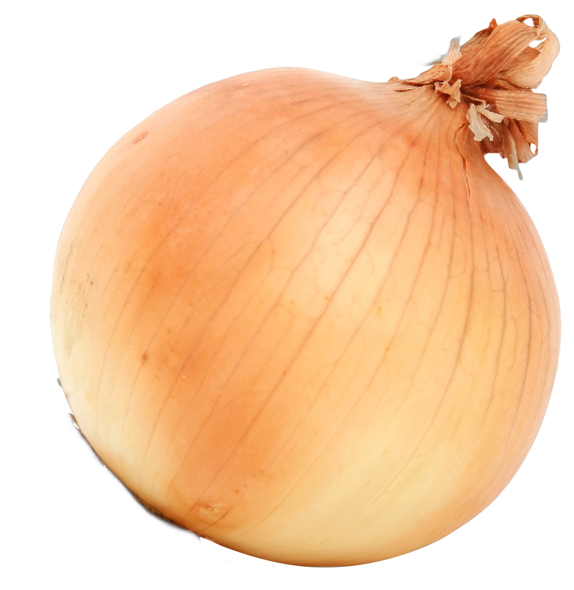
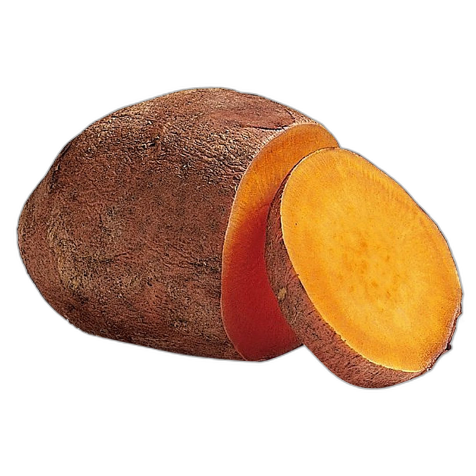
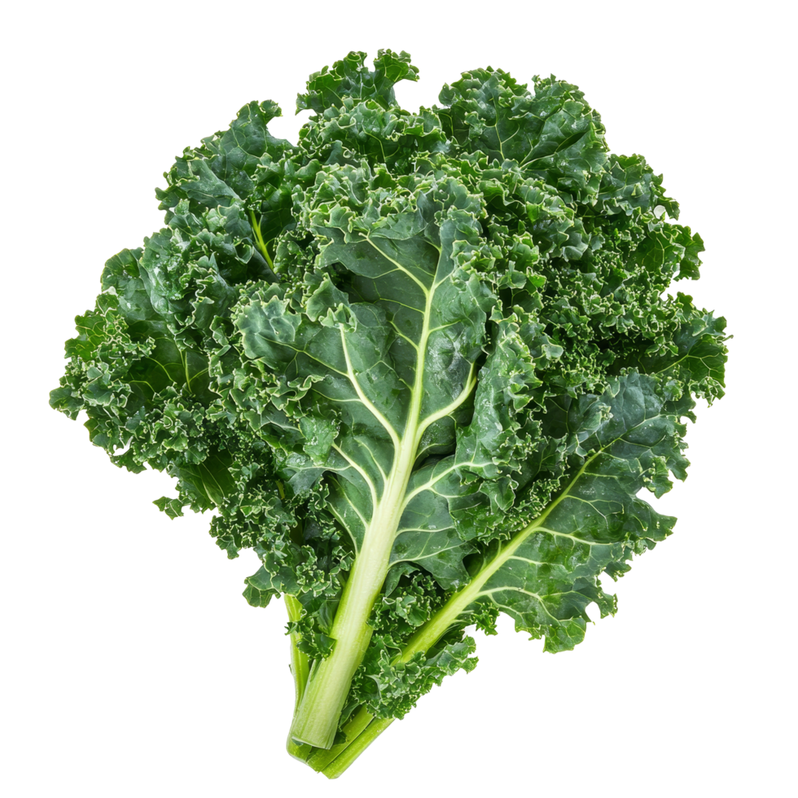
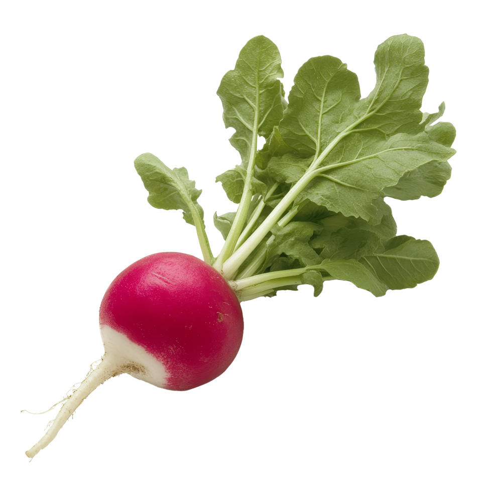

Experience our bountiful vegetable yield in immersive 360° panorama
360° Vegetable Yield View
How to Navigate the 360° View
- Click and drag to look around the vegetable garden
- Use your mouse wheel to zoom in and out
- On mobile: Touch and drag to explore, pinch to zoom
- Explore different areas to see our diverse vegetable yields
Our Fresh Vegetable Varieties

Basil
Fresh aromatic basil leaves, perfect for culinary creations and natural wellness.
Garlic
Organic garlic bulbs with rich flavor and natural health benefits.

Cabbage
Crisp, fresh cabbage heads rich in nutrients and perfect for various dishes.

Onion
Sweet and pungent onions, essential for cooking and natural health remedies.

Sweet Potatoes
Nutritious orange sweet potatoes, packed with vitamins and natural sweetness.

Kale
Superfood kale leaves, loaded with antioxidants and essential nutrients.

Radish
Crisp and spicy radishes, great for salads and natural detoxification.
And More!
Explore our 360° view to discover additional organic vegetables in our yield.